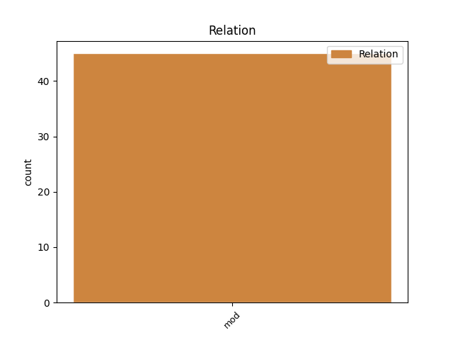
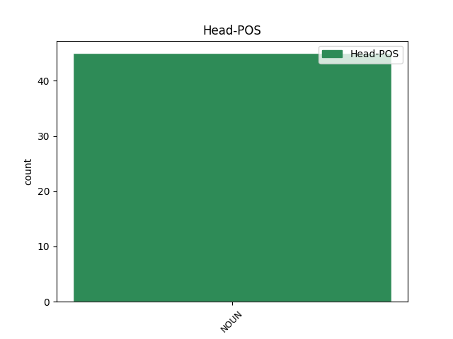
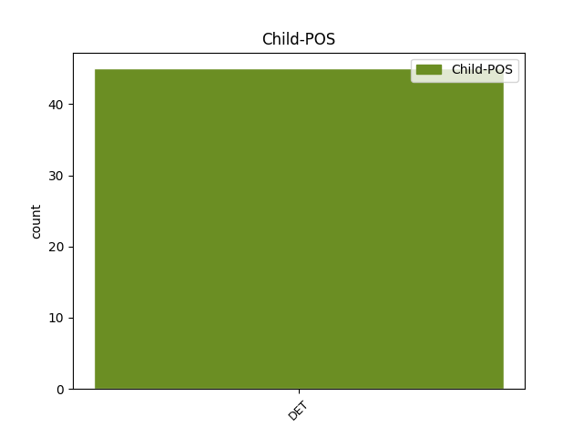

Distribution of features within this leaf



Agreement Rules sorted by frequency.
- When the dependent token is the modifer(mod) of the head token, and the head token is NOUN and the dependent token is DET.
1 Aksenten _ _ _ _ 0 _ _ _
2 min _ _ _ _ 0 _ _ _
3 er _ _ _ _ 0 _ _ _
4 et _ _ _ _ 0 _ _ _
5 bevis _ _ _ _ 0 _ _ _
6 på _ _ _ _ 0 _ _ _
7 det _ _ _ _ 0 _ _ _
8 franske _ _ _ _ 0 _ _ _
9 språkets _ _ _ _ 0 _ _ _
10 glans _ _ _ _ 0 _ _ _
11 og _ _ _ _ 0 _ _ _
12 dets det DET _ Case=Gen|Gender=Neut|Number=Sing|PronType=Dem 14 mod _ _
13 verdensomspennende _ _ _ _ 0 _ _ _
14 appell appell NOUN _ Definite=Ind|Gender=Masc|Number=Sing 0 _ _ _
15 , _ _ _ _ 0 _ _ _
16 sier _ _ _ _ 0 _ _ _
17 presidentkandidaten _ _ _ _ 0 _ _ _
18 i _ _ _ _ 0 _ _ _
19 videoen _ _ _ _ 0 _ _ _
20 , _ _ _ _ 0 _ _ _
21 som _ _ _ _ 0 _ _ _
22 fikk _ _ _ _ 0 _ _ _
23 23.000 _ _ _ _ 0 _ _ _
24 treff _ _ _ _ 0 _ _ _
25 i _ _ _ _ 0 _ _ _
26 timene _ _ _ _ 0 _ _ _
27 etter _ _ _ _ 0 _ _ _
28 at _ _ _ _ 0 _ _ _
29 den _ _ _ _ 0 _ _ _
30 ble _ _ _ _ 0 _ _ _
31 publisert _ _ _ _ 0 _ _ _
32 . _ _ _ _ 0 _ _ _
Disagree Examples:
1 Han _ _ _ _ 0 _ _ _
2 fastslo _ _ _ _ 0 _ _ _
3 blant _ _ _ _ 0 _ _ _
4 annet _ _ _ _ 0 _ _ _
5 at _ _ _ _ 0 _ _ _
6 " _ _ _ _ 0 _ _ _
7 på _ _ _ _ 0 _ _ _
8 det _ _ _ _ 0 _ _ _
9 mest _ _ _ _ 0 _ _ _
10 sentrale _ _ _ _ 0 _ _ _
11 området _ _ _ _ 0 _ _ _
12 , _ _ _ _ 0 _ _ _
13 å _ _ _ _ 0 _ _ _
14 bekjempe _ _ _ _ 0 _ _ _
15 krig _ _ _ _ 0 _ _ _
16 og _ _ _ _ 0 _ _ _
17 sikre _ _ _ _ 0 _ _ _
18 fred _ _ _ _ 0 _ _ _
19 , _ _ _ _ 0 _ _ _
20 ble _ _ _ _ 0 _ _ _
21 FN _ _ _ _ 0 _ _ _
22 likevel _ _ _ _ 0 _ _ _
23 ikke _ _ _ _ 0 _ _ _
24 hva _ _ _ _ 0 _ _ _
25 dens den DET _ Case=Gen|Gender=Masc|Number=Sing|PronType=Dem 26 mod _ _
26 forkjempere forkjemper NOUN _ Definite=Ind|Gender=Masc|Number=Plur 0 _ _ _
27 hadde _ _ _ _ 0 _ _ _
28 håpet _ _ _ _ 0 _ _ _
29 på _ _ _ _ 0 _ _ _
30 . _ _ _ _ 0 _ _ _
1 " _ _ _ _ 0 _ _ _
2 Kun _ _ _ _ 0 _ _ _
3 én _ _ _ _ 0 _ _ _
4 av _ _ _ _ 0 _ _ _
5 FNs _ _ _ _ 0 _ _ _
6 seks _ _ _ _ 0 _ _ _
7 tidligere _ _ _ _ 0 _ _ _
8 generalsekretærer _ _ _ _ 0 _ _ _
9 kan _ _ _ _ 0 _ _ _
10 sammenlignes _ _ _ _ 0 _ _ _
11 med _ _ _ _ 0 _ _ _
12 Annan _ _ _ _ 0 _ _ _
13 i _ _ _ _ 0 _ _ _
14 personlig _ _ _ _ 0 _ _ _
15 kraft _ _ _ _ 0 _ _ _
16 og _ _ _ _ 0 _ _ _
17 historisk _ _ _ _ 0 _ _ _
18 betydning _ _ _ _ 0 _ _ _
19 , _ _ _ _ 0 _ _ _
20 nemlig _ _ _ _ 0 _ _ _
21 Dag _ _ _ _ 0 _ _ _
22 Hammarskjöld _ _ _ _ 0 _ _ _
23 , _ _ _ _ 0 _ _ _
24 organisasjonens _ _ _ _ 0 _ _ _
25 andre annen DET _ Number=Plur|PronType=Dem 26 mod _ _
26 generalsekretær generalsekretær NOUN _ Definite=Ind|Gender=Masc|Number=Sing 0 _ _ _
27 " _ _ _ _ 0 _ _ _
28 , _ _ _ _ 0 _ _ _
29 sa _ _ _ _ 0 _ _ _
30 Berge _ _ _ _ 0 _ _ _
31 videre _ _ _ _ 0 _ _ _
32 . _ _ _ _ 0 _ _ _
1 Finanskrisen _ _ _ _ 0 _ _ _
2 og _ _ _ _ 0 _ _ _
3 dens den DET _ Case=Gen|Gender=Masc|Number=Sing|PronType=Dem 4 mod _ _
4 ettervirkninger ettervirkning NOUN _ Definite=Ind|Gender=Fem|Number=Plur 0 _ _ _
5 har _ _ _ _ 0 _ _ _
6 svekket _ _ _ _ 0 _ _ _
7 USA _ _ _ _ 0 _ _ _
8 og _ _ _ _ 0 _ _ _
9 Europa _ _ _ _ 0 _ _ _
10 ikke _ _ _ _ 0 _ _ _
11 bare _ _ _ _ 0 _ _ _
12 økonomisk _ _ _ _ 0 _ _ _
13 , _ _ _ _ 0 _ _ _
14 men _ _ _ _ 0 _ _ _
15 også _ _ _ _ 0 _ _ _
16 politisk _ _ _ _ 0 _ _ _
17 . _ _ _ _ 0 _ _ _
1 Selv _ _ _ _ 0 _ _ _
2 når _ _ _ _ 0 _ _ _
3 den _ _ _ _ 0 _ _ _
4 svenske _ _ _ _ 0 _ _ _
5 regjeringen _ _ _ _ 0 _ _ _
6 møter _ _ _ _ 0 _ _ _
7 folkelig _ _ _ _ 0 _ _ _
8 motstand _ _ _ _ 0 _ _ _
9 , _ _ _ _ 0 _ _ _
10 som _ _ _ _ 0 _ _ _
11 den _ _ _ _ 0 _ _ _
12 gjorde _ _ _ _ 0 _ _ _
13 angående _ _ _ _ 0 _ _ _
14 både _ _ _ _ 0 _ _ _
15 høyrekjøring _ _ _ _ 0 _ _ _
16 og _ _ _ _ 0 _ _ _
17 kjernekraft _ _ _ _ 0 _ _ _
18 , _ _ _ _ 0 _ _ _
19 kan _ _ _ _ 0 _ _ _
20 dens den DET _ Case=Gen|Gender=Masc|Number=Sing|PronType=Dem 21 mod _ _
21 standpunkter standpunkt NOUN _ Definite=Ind|Gender=Neut|Number=Plur 0 _ _ _
22 likevel _ _ _ _ 0 _ _ _
23 bli _ _ _ _ 0 _ _ _
24 gjennomført _ _ _ _ 0 _ _ _
25 , _ _ _ _ 0 _ _ _
26 uten _ _ _ _ 0 _ _ _
27 at _ _ _ _ 0 _ _ _
28 det _ _ _ _ 0 _ _ _
29 holdes _ _ _ _ 0 _ _ _
30 ny _ _ _ _ 0 _ _ _
31 folkeavstemning _ _ _ _ 0 _ _ _
32 . _ _ _ _ 0 _ _ _
1 Poenget _ _ _ _ 0 _ _ _
2 er _ _ _ _ 0 _ _ _
3 altså _ _ _ _ 0 _ _ _
4 ikke _ _ _ _ 0 _ _ _
5 at _ _ _ _ 0 _ _ _
6 man _ _ _ _ 0 _ _ _
7 skal _ _ _ _ 0 _ _ _
8 kalle _ _ _ _ 0 _ _ _
9 krigføringen _ _ _ _ 0 _ _ _
10 i _ _ _ _ 0 _ _ _
11 Afghanistan _ _ _ _ 0 _ _ _
12 for _ _ _ _ 0 _ _ _
13 en _ _ _ _ 0 _ _ _
14 krig _ _ _ _ 0 _ _ _
15 med _ _ _ _ 0 _ _ _
16 dets det DET _ Case=Gen|Gender=Neut|Number=Sing|PronType=Dem 18 mod _ _
17 juridiske _ _ _ _ 0 _ _ _
18 implikasjoner implikasjon NOUN _ Definite=Ind|Gender=Masc|Number=Plur 0 _ _ _
19 , _ _ _ _ 0 _ _ _
20 men _ _ _ _ 0 _ _ _
21 at _ _ _ _ 0 _ _ _
22 man _ _ _ _ 0 _ _ _
23 skal _ _ _ _ 0 _ _ _
24 kalle _ _ _ _ 0 _ _ _
25 krigføringen _ _ _ _ 0 _ _ _
26 med _ _ _ _ 0 _ _ _
27 dens _ _ _ _ 0 _ _ _
28 rette _ _ _ _ 0 _ _ _
29 navn _ _ _ _ 0 _ _ _
30 . _ _ _ _ 0 _ _ _